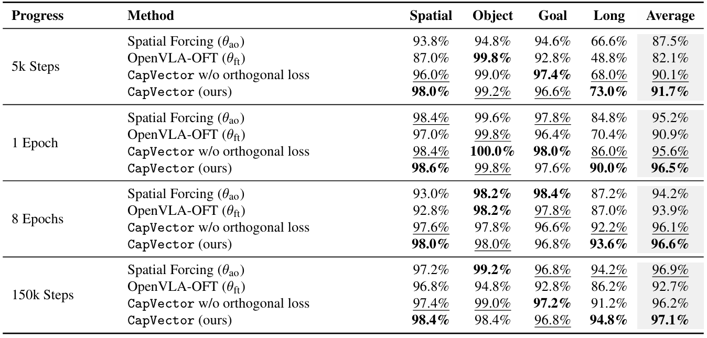
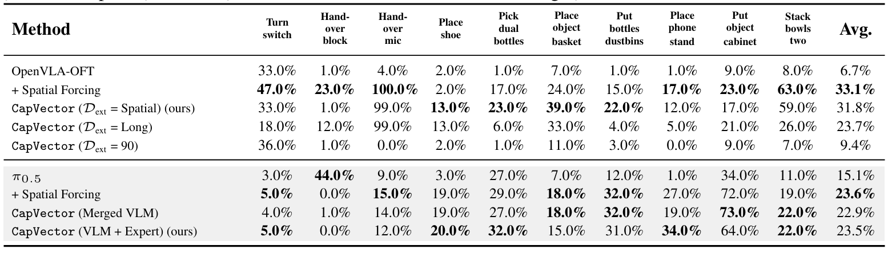
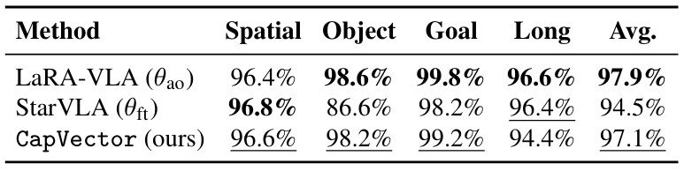
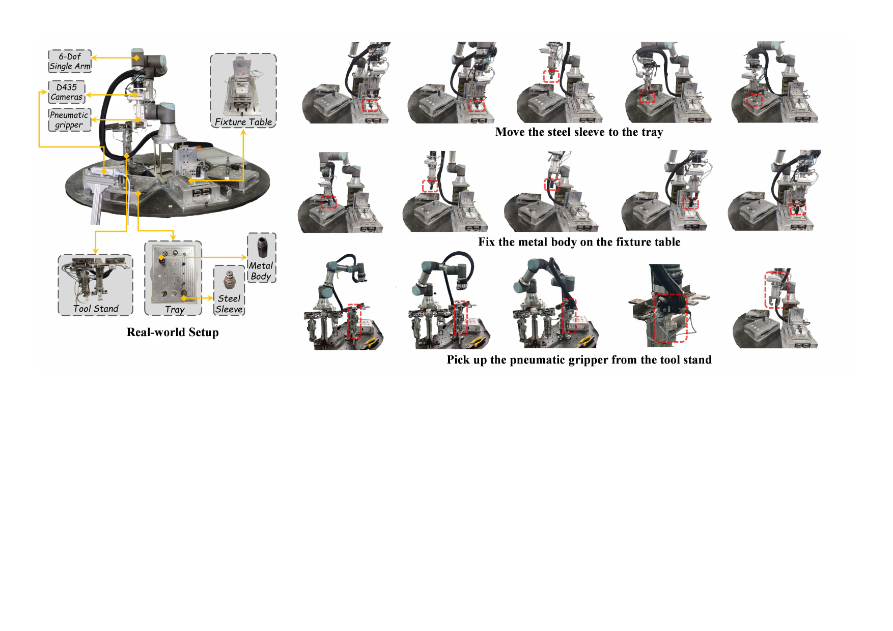
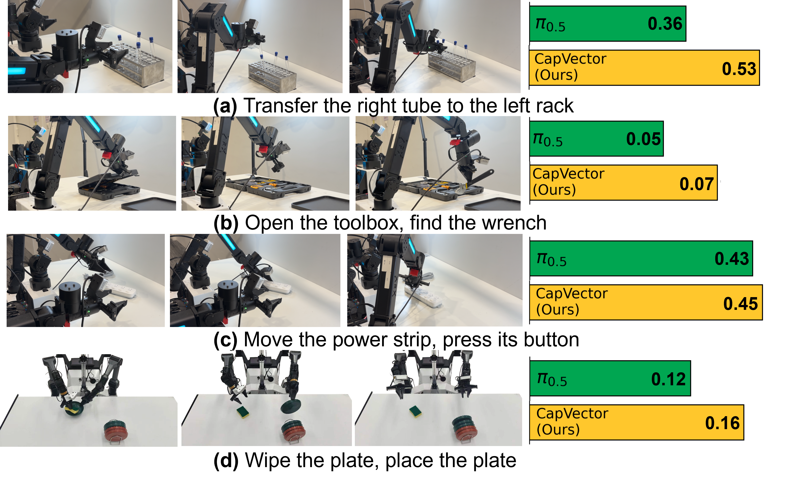

Extract capability vectors from auxiliary-objective finetuning and merge them into the pretrained backbone as a stronger initialization.
Retain the performance and convergence benefits of auxiliary-objective SFT methods while relying on standard SFT downstream training overhead.
Work across different VLA architectures and auxiliary-objective strategies, including spatial perception and multimodal reasoning settings.
Improve out-of-domain transfer and remain effective on real-world tasks, novel scenes, and new robot embodiments.
CapVector decouples two effects of auxiliary-objective finetuning in parameter space: enhancing general capabilities and fitting task-specific action distributions. The difference between an auxiliary-objective model and a standard-SFT model on the same task becomes a transferable capability vector.
After Extracting the capability vector and merging it into the pretrained model, downstream adaptation only needs standard SFT plus a lightweight orthogonal regularization loss. This keeps the workflow simple while preserving strong task performance and better training efficiency.
This paper proposes a novel approach to address the challenge that pretrained VLA models often fail to effectively improve performance and reduce adaptation costs during standard supervised finetuning (SFT). Some advanced finetuning methods with auxiliary training objectives can improve performance and reduce the number of convergence steps, but they typically incur significant computational overhead due to the additional losses from auxiliary objectives.
To simultaneously achieve the enhanced capabilities of auxiliary training with the simplicity of standard SFT, we decouple the two objectives of auxiliary-objective SFT within the parameter space, namely, enhancing general capabilities and fitting task-specific action distributions. The parameters' difference between two models trained with distinct strategies can then be interpreted as capability vectors and merged with pretrained parameters to form a capability-enhanced meta model.
Moreover, when standard SFT is augmented with a lightweight orthogonal regularization loss, the merged model attains performance comparable to auxiliary finetuned baselines with reduced computational overhead. Internal and external experiments demonstrate that CapVector is effective across diverse models and can generalize to novel environments and embodiments out of the box.
CapVector consists of two stages. Before downstream training, it extracts a capability vector by subtracting a standard-SFT model from an auxiliary-objective SFT model trained on the same extensive dataset set. This vector is then merged into the pretrained VLA to produce a capability-enhanced meta model.
During downstream adaptation, CapVector applies standard SFT together with an orthogonal regularization loss. The regularizer encourages updates for the new task to stay orthogonal to the injected capability vector, which mitigates forgetting and preserves the transferred capability over long training runs.
Train one model with standard SFT and another with auxiliary-objective SFT on the same small extensive dataset.
Compute the parameter difference to isolate the transferable capability vector.
Merge the vector into the pretrained backbone and finetune it with orthogonal regularization.

On LIBERO, CapVector consistently matches or exceeds Spatial Forcing while outperforming standard OpenVLA-OFT finetuning, especially in low-step regimes. The paper's findings show that the merged initialization preserves the fast convergence behavior of auxiliary-objective training.
The orthogonal regularization term is critical. Without it, the injected capability gradually degrades during long training, while the regularized version remains stronger even after abundant optimization steps.

CapVector also transfers across domains: capability vectors extracted from LIBERO improve performance on RoboTwin, demonstrating that the injected gain is task-agnostic rather than tied to a single benchmark.

Beyond OpenVLA and Spatial Forcing, CapVector also works with StarVLA, LaRA-VLA, and π0.5. The paper shows that capability vectors can capture both spatial perception gains and multimodal reasoning gains, and can be merged into autoregressive and flow-matching VLA backbones alike.

The paper validates sim-to-real transfer by extracting capability vectors solely from LIBERO-Spatial and applying them to real-world finetuning. CapVector substantially improves over the standard baselines across three industrial tasks and can even surpass the auxiliary-objective baseline on some of them.

These results support the main claim behind CapVector: transferable capability gains can be distilled once and reused across tasks, scenes, and robot embodiments without carrying the runtime cost of auxiliary objectives into every downstream training run.
@article{song2026capvector,
title = {CapVector: Learning Transferable Capability Vectors in Parametric Space for Vision-Language-Action Models},
author = {Song, Wenxuan and Zhao, Han and Li, Fuhao and Zhou, Ziyang and Wang, Xi and Lyu, Jing and Ding, Pengxiang and Wang, Yan and Wang, Donglin and Li, Haoang},
journal = {Preprint},
year = {2026}
}